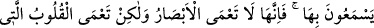
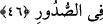
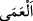

Ömrüm boyunca işitmedim
Kötülük edenin iyilik bulduğunu
Zakkum ağacı hurma vermez;
Ne ekersen onu biçersin
Ne gam kalır ne de sevinç;
Yalnız yapılan amelin karşılığı ile iyi bir ad kalır
46. (Seni yalanlayanlar) hiç yeryüzünde dolaşmadılar mı? Zira dolaşsalardı
elbette düşünecek kalpleri ve işitecek kulakları olurdu. Ama gerçek şu ki, gözler
kör olmaz; lâkin göğüsler içindeki kalpler kör olur.
Seni yalanlayan Mekke kâfirleri “hiç yeryüzünde dolaşmadılar mı?” Helak edilen
kavimlerin yok oldukları yerleri görmek için Şam’a ve Yemen’e sefer etmediler de
bundan habersiz mi oldular? “Zira dolaşsalardı elbette” gördükleri ibret alınacak
şeyler sebebiyle tevhîde dâir düşünülmesi gerekeni akledip “düşünecek kalpleri ve”
kendilerine komşu toplumlara gidip onlardan helâk olanların haberlerinden işitilmesi
gerekeni “işitecek kulakları olurdu.” Çünkü onlar helâk olanların durumunu
kendilerinden daha iyi biliyorlardı. Mekkeliler yeryüzünde seferler etmiş olsalar da
ibret almak üzere yolculuk etmediklerinden âyette seyahat etmemiş sayılmışlar ve
yeryüzünde dolaşmaya teşvik edilmişlerdir. Âyetteki soru, yadırgamak ve reddetmek
(inkâr) içindir.
“Ama gerçek” kıssa “şu ki, gözler kör olmaz; lâkin göğüsler içindeki kalpler kör
olur.” Yâni bozukluk onların duyularında değil, ancak akıllarındadır. Bu da hevâya
uymaktan ve gaflete dalmaktan meydana gelir.
Başlarında olan gözleri kör değildir, yani onların hislerinde bozukluk yoktur, her şeyi
görürler. Ancak sînelerinde olan gönüller ibret almaz, kördür. Yani onların kalp gözleri
örtülüdür, geçmiş kavimlerin başından geçenlerden ibret almazlar.
Ya da gözlerin kör olmasına îtibar edilmez. Sanki o kalblerin körlüğünün yanında o
körlük değildir. “__WORD__ (körlük)” kelimesi, hem göz hem de basîret kaybedildiğinde
söylenir. “Göğüsler” kelimesinin zikredilmesi te’kid için ve mecaz ile söylenmiş
olduğu vehmini ortadan kaldırmak ve gerçek körlüğün bilinen göze mahsus körlük
olmadığına dikkat çekmektir. Bir hadiste şöyle buyrulmuştur: “Her kulun mutlaka dört
gözü vardır. Başında iki gözü vardır ki dünya işine onlarla bakar. Kalbinde de iki
gözü vardır ki din işini onlarla görür.”[41] İnsanların çoğunda kalp gözü körlüğü